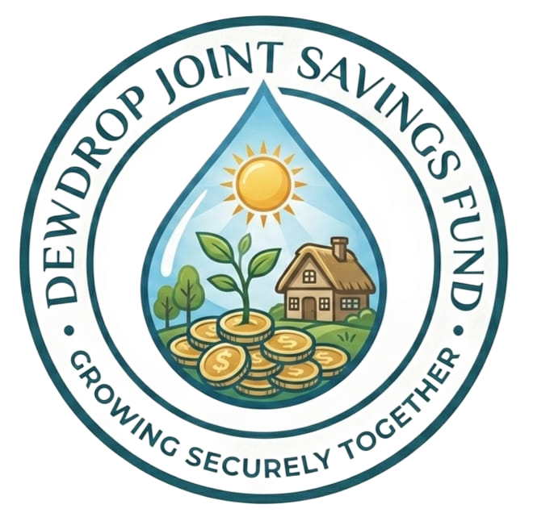

সহকর্মীদের সাথে মিলে একটি সুন্দর ভবিষ্যতের জন্য আমাদের এই যৌথ সঞ্চয় উদ্যোগ। স্বচ্ছতা ও পারস্পরিক সহযোগিতার মাধ্যমে আমরা এগিয়ে যেতে চাই।
সদস্য হোনফান্ডের প্রতিটি আয়-ব্যয় এবং সদস্যদের হিসাব রাখা হয় সম্পূর্ণ স্বচ্ছতার সাথে।
সবার সম্মিলিত প্রচেষ্টায় একটি নির্ভরযোগ্য ও সুরক্ষিত আর্থিক ভিত্তি তৈরি করা।
আমরা, 'ডিউ ড্রপ যৌথ সঞ্চয় তহবিল' (DewDrop Joint Savings Fund)-এর প্রতিষ্ঠাতা সদস্যবৃন্দ, পারস্পরিক সহযোগিতা, সুদৃঢ় ঐক্য এবং একটি সঞ্চয়ী মনোভাব গড়ে তোলার লক্ষ্যে সর্বসম্মতিক্রমে এই সমিতি গঠন করছি। আমাদের মূল উদ্দেশ্য- পেশাগত জীবনের ব্যস্ততার পাশাপাশি নিয়মিত ক্ষুদ্র ক্ষুদ্র সঞ্চয়ের মাধ্যমে একটি শক্তিশালী যৌথ তহবিল গঠন করা, যা ভবিষ্যতে আমাদের যেকোনো বড় ধরনের লাভজনক খাতে যৌথ বিনিয়োগের পথ সুগম করবে এবং আমাদের আর্থিক ও সামাজিক নিরাপত্তাকে জোরদার করবে।
পরিশেষে বলা যায়, 'ডিউ ড্রপ যৌথ সঞ্চয় তহবিল' (DewDrop Joint Savings Fund) কেবল একটি আর্থিক সঞ্চয়ের মাধ্যম নয়; এটি আমাদের পারস্পরিক আস্থা, বিশ্বাস এবং যৌথ সফলতার একটি স্মারক। আমরা দৃঢ়ভাবে বিশ্বাস করি, এই নীতিমালার প্রতিটি ধারা অক্ষরে অক্ষরে পালনের মাধ্যমে আমাদের তহবিলের শৃঙ্খলা বজায় থাকবে। দীর্ঘ ৩ বছরের এই পথচলায় যেকোনো সাময়িক প্রতিকূলতা বা মতপার্থক্য আমরা সকলে মিলে আন্তরিকতা, পারস্পরিক সৌহার্দ্য এবং আলোচনার মাধ্যমে সমাধান করব, ইনশাআল্লাহ। এই যৌথ প্রচেষ্টা আমাদের সকলের জন্য কল্যাণময়, বরকতময় এবং একটি উজ্জ্বল ভবিষ্যৎ বিনির্মানের হাতিয়ার হোক, আমীন।
📍 ৬৭ নয়া পল্টন, ঢাকা।
📞 মোবাইল: 01977885122
✉️ ইমেইল: dewdropjsf@gmail.com